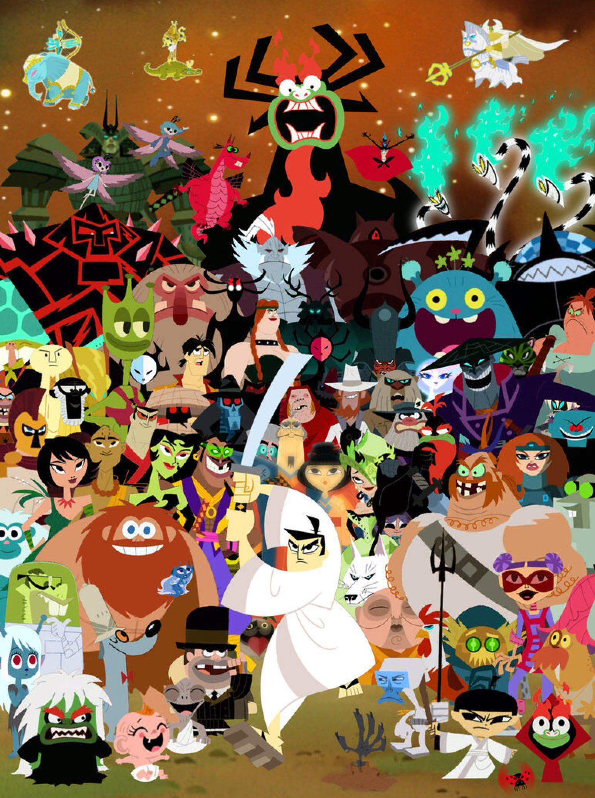

About Samurai Jack
"Jack", is an unnamed Japanese samurai prince who wields a mystic katana capable of cutting through virtually anything. He sets out to free his kingdom after it is taken over by an evil, shapeshifting demon known as Aku.
Jack and his Frenemies
Jack's Characteristics
- Quiet
- Fierce
- Dedicated
- Skilled
Jack's Friends
His only friend is the the silencing of his enemies